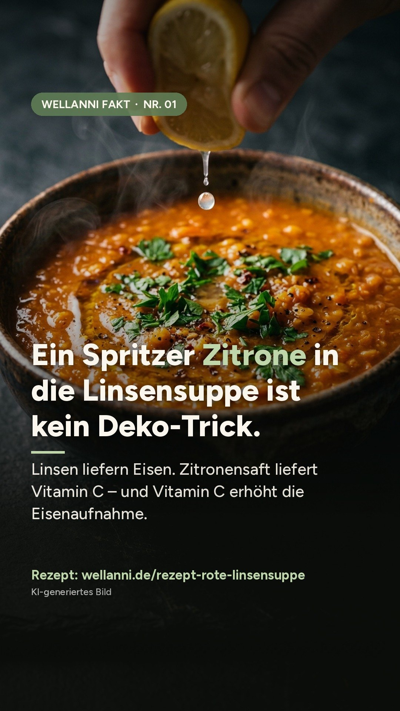
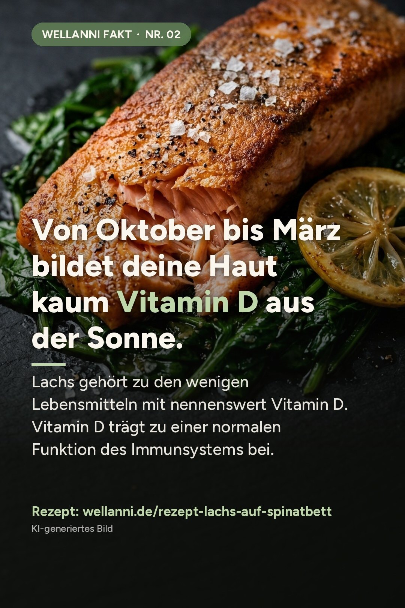
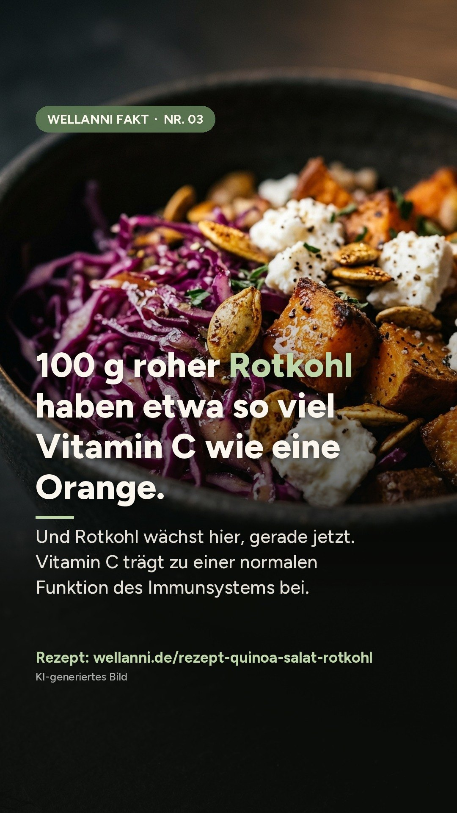
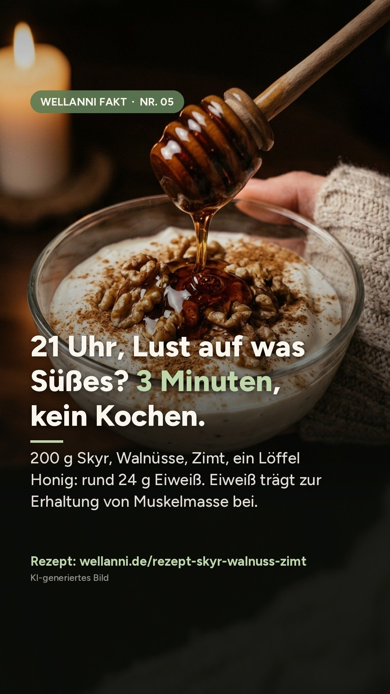

WellANNI Fakt Nr. 01
Ein Spritzer Zitrone in die Linsensuppe ist kein Deko-Trick.
Linsen liefern Eisen. Zitronensaft liefert Vitamin C – und Vitamin C erhöht die Eisenaufnahme.
Ein Satz, der hängen bleibt – und das Rezept, mit dem du ihn gleich umsetzt. Zum Merken, Weiterschicken und Nachkochen. Neue Fakten erscheinen abends auf Instagram und Pinterest.

Linsen liefern Eisen. Zitronensaft liefert Vitamin C – und Vitamin C erhöht die Eisenaufnahme.

Lachs gehört zu den wenigen Lebensmitteln mit nennenswert Vitamin D. Vitamin D trägt zu einer normalen Funktion des Immunsystems bei.

Und Rotkohl wächst hier, gerade jetzt. Vitamin C trägt zu einer normalen Funktion des Immunsystems bei.
Studien zeigen: In der zweiten Zyklushälfte essen Frauen im Schnitt etwas mehr. Das ist Biologie – kein Disziplin-Problem.

200 g Skyr, Walnüsse, Zimt, ein Löffel Honig: rund 24 g Eiweiß. Eiweiß trägt zur Erhaltung von Muskelmasse bei.
Die Bilder sind KI-generiert. Gesundheitsbezogene Aussagen entsprechen den in der EU zugelassenen Angaben. WellANNI ersetzt keine ärztliche Beratung.